immigration* rate (per district and year)
Figure 3.1: immigration* rate by district and year
prediction: future immigration* rate (per year and district)
overview

Figure 3.2: immigration* rate by district and year; prediction
more detailed: regression and limits

Figure 3.3: immigration* rate by district and year; prediction with details
migration: distribution of sex and origin
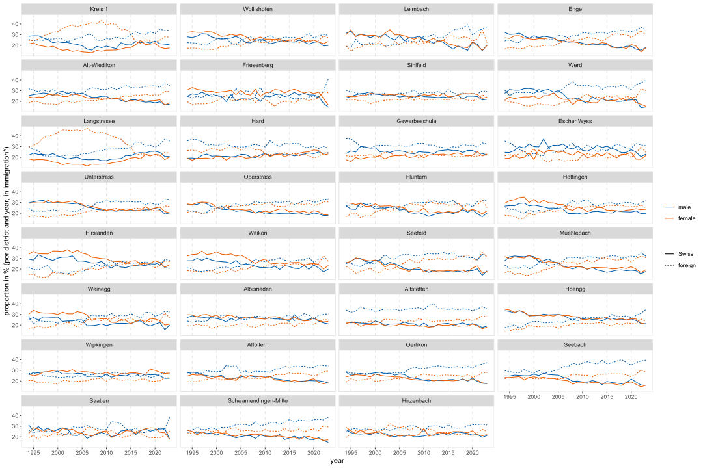
Figure 3.4: immigration proportion of sex by origin, district and year
distribution of sex and origin: prediction
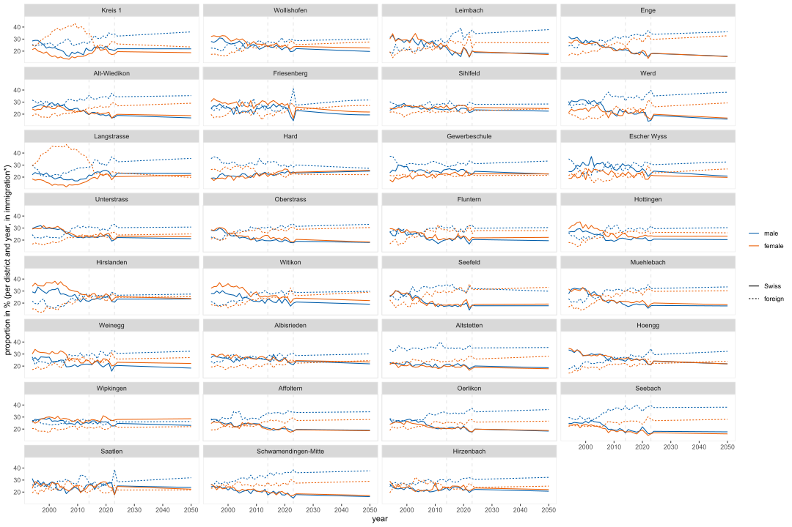
Figure 3.5: immigration proportion of sex by origin, district and year; prediction
age proportion
immigration*

Figure 3.6: immigration* per district, year, sex, origin
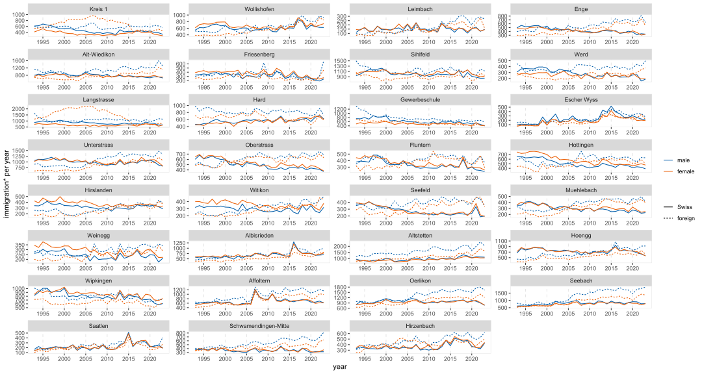
Figure 3.7: immigration* per district, year, sex, origin; free scales
age proportion: per district, year, sex, origin
focus age
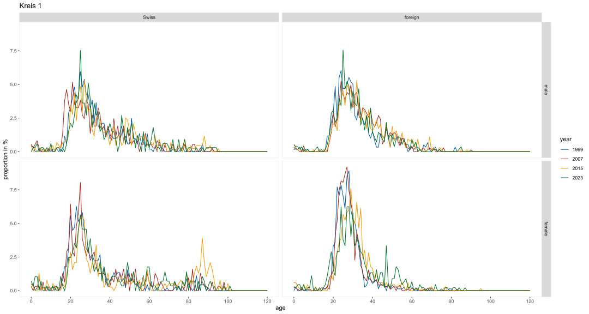
Figure 3.8: immigration* age proportion per district, year, sex, origin; focus on age
Figure 3.9: immigration* age proportion per district, year, sex, origin; focus on age
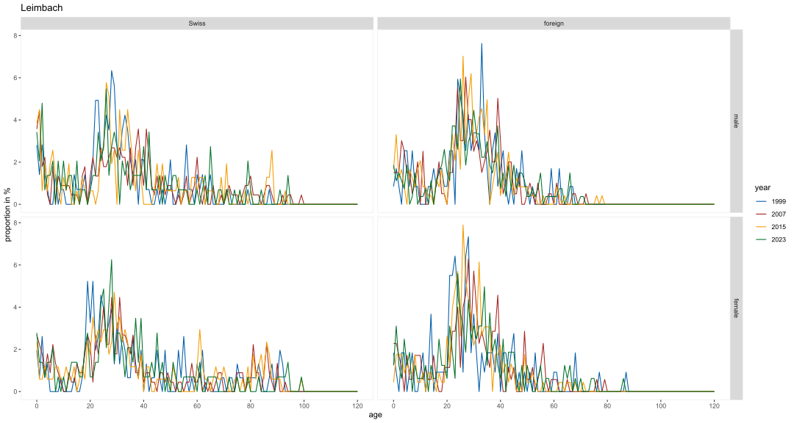
Figure 3.10: immigration* age proportion per district, year, sex, origin; focus on age
Figure 3.11: immigration* age proportion per district, year, sex, origin; focus on age

Figure 3.12: immigration* age proportion per district, year, sex, origin; focus on age

Figure 3.13: immigration* age proportion per district, year, sex, origin; focus on age

Figure 3.14: immigration* age proportion per district, year, sex, origin; focus on age

Figure 3.15: immigration* age proportion per district, year, sex, origin; focus on age

Figure 3.16: immigration* age proportion per district, year, sex, origin; focus on age
Figure 3.17: immigration* age proportion per district, year, sex, origin; focus on age

Figure 3.18: immigration* age proportion per district, year, sex, origin; focus on age

Figure 3.19: immigration* age proportion per district, year, sex, origin; focus on age
Figure 3.20: immigration* age proportion per district, year, sex, origin; focus on age

Figure 3.21: immigration* age proportion per district, year, sex, origin; focus on age

Figure 3.22: immigration* age proportion per district, year, sex, origin; focus on age
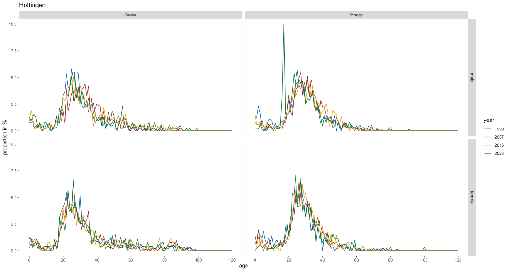
Figure 3.23: immigration* age proportion per district, year, sex, origin; focus on age

Figure 3.24: immigration* age proportion per district, year, sex, origin; focus on age
Figure 3.25: immigration* age proportion per district, year, sex, origin; focus on age

Figure 3.26: immigration* age proportion per district, year, sex, origin; focus on age
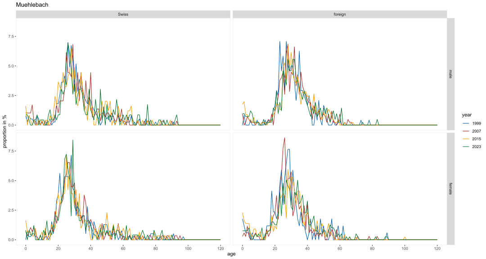
Figure 3.27: immigration* age proportion per district, year, sex, origin; focus on age

Figure 3.28: immigration* age proportion per district, year, sex, origin; focus on age

Figure 3.29: immigration* age proportion per district, year, sex, origin; focus on age
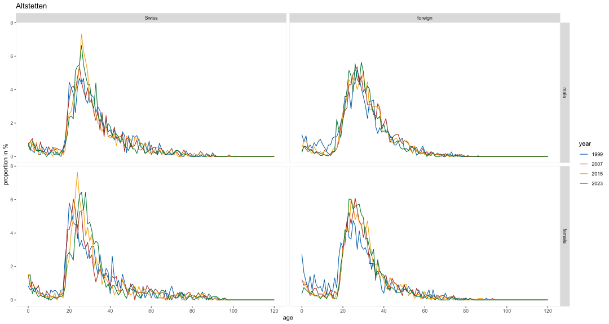
Figure 3.30: immigration* age proportion per district, year, sex, origin; focus on age

Figure 3.31: immigration* age proportion per district, year, sex, origin; focus on age
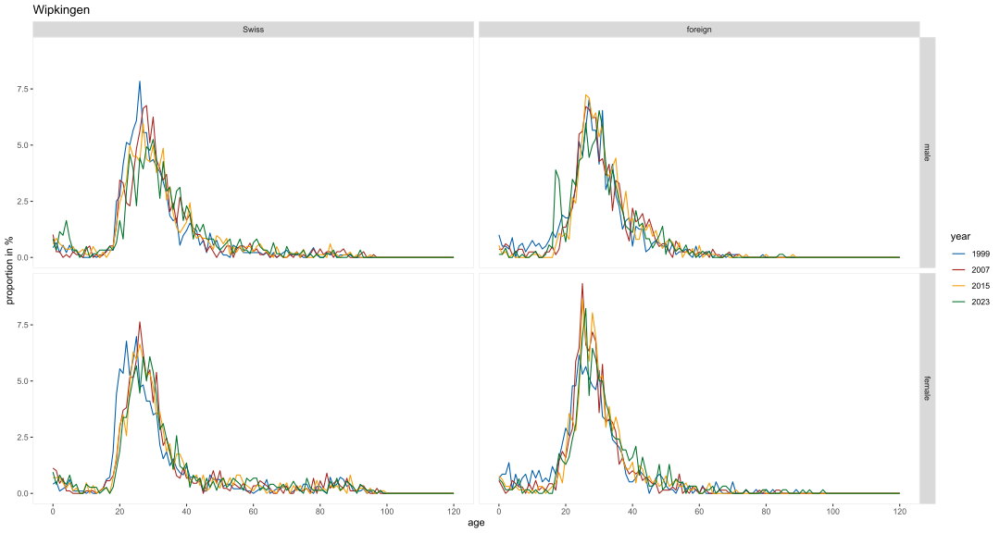
Figure 3.32: immigration* age proportion per district, year, sex, origin; focus on age
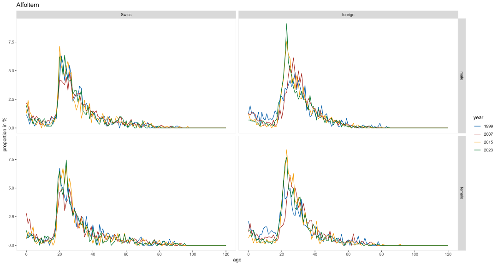
Figure 3.33: immigration* age proportion per district, year, sex, origin; focus on age
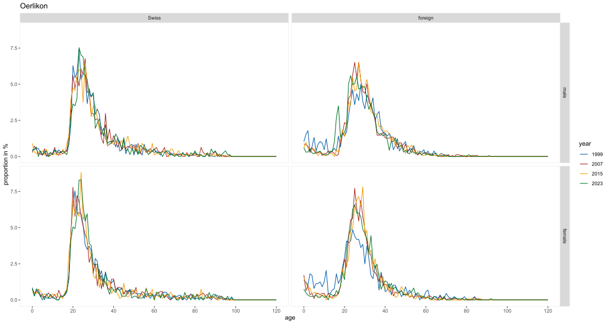
Figure 3.34: immigration* age proportion per district, year, sex, origin; focus on age
Figure 3.35: immigration* age proportion per district, year, sex, origin; focus on age
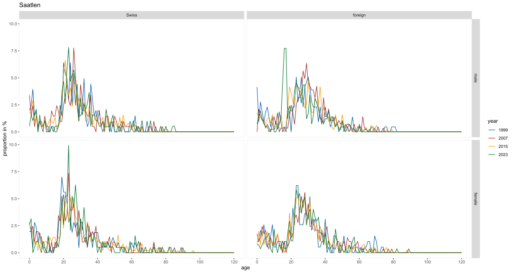
Figure 3.36: immigration* age proportion per district, year, sex, origin; focus on age

Figure 3.37: immigration* age proportion per district, year, sex, origin; focus on age
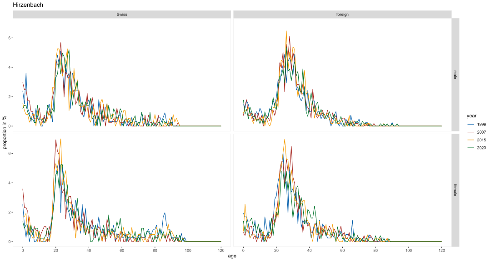
Figure 3.38: immigration* age proportion per district, year, sex, origin; focus on age
focus years
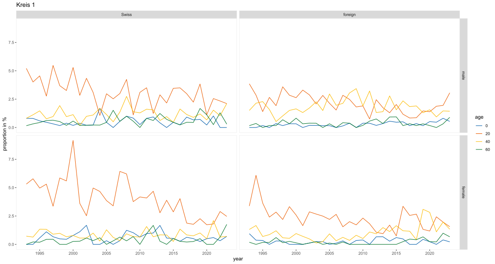
Figure 3.39: immigration* age proportion per district, year, sex, origin; focus on years

Figure 3.40: immigration* age proportion per district, year, sex, origin; focus on years

Figure 3.41: immigration* age proportion per district, year, sex, origin; focus on years

Figure 3.42: immigration* age proportion per district, year, sex, origin; focus on years

Figure 3.43: immigration* age proportion per district, year, sex, origin; focus on years
Figure 3.44: immigration* age proportion per district, year, sex, origin; focus on years

Figure 3.45: immigration* age proportion per district, year, sex, origin; focus on years
Figure 3.46: immigration* age proportion per district, year, sex, origin; focus on years
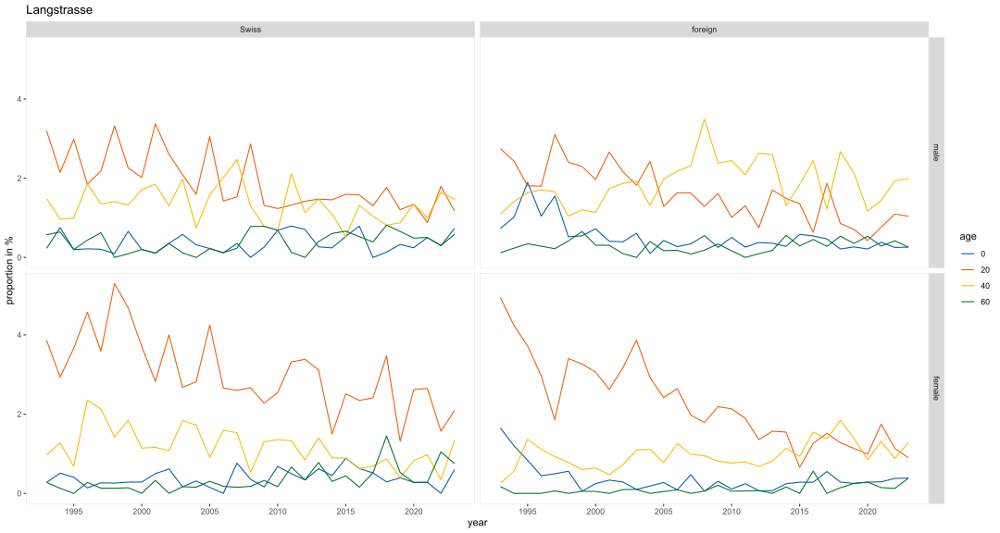
Figure 3.47: immigration* age proportion per district, year, sex, origin; focus on years

Figure 3.48: immigration* age proportion per district, year, sex, origin; focus on years
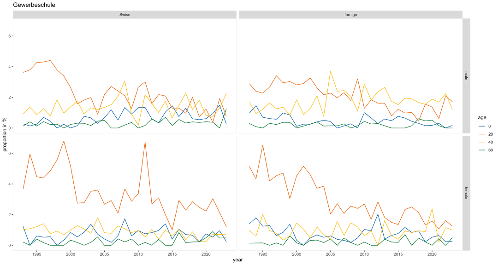
Figure 3.49: immigration* age proportion per district, year, sex, origin; focus on years
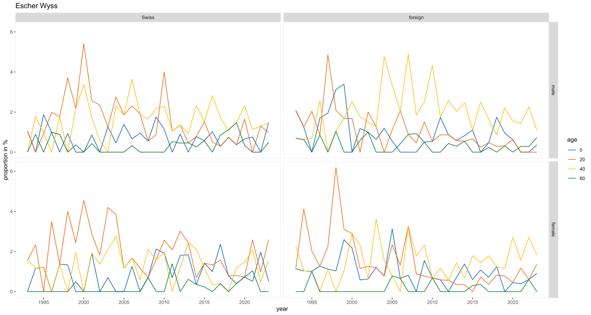
Figure 3.50: immigration* age proportion per district, year, sex, origin; focus on years
Figure 3.51: immigration* age proportion per district, year, sex, origin; focus on years
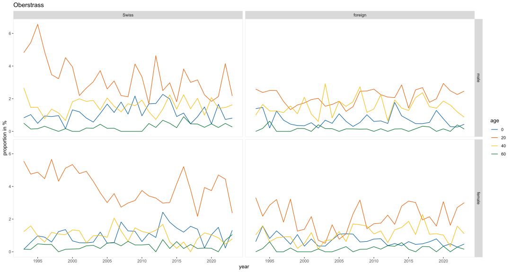
Figure 3.52: immigration* age proportion per district, year, sex, origin; focus on years

Figure 3.53: immigration* age proportion per district, year, sex, origin; focus on years
Figure 3.54: immigration* age proportion per district, year, sex, origin; focus on years

Figure 3.55: immigration* age proportion per district, year, sex, origin; focus on years
Figure 3.56: immigration* age proportion per district, year, sex, origin; focus on years
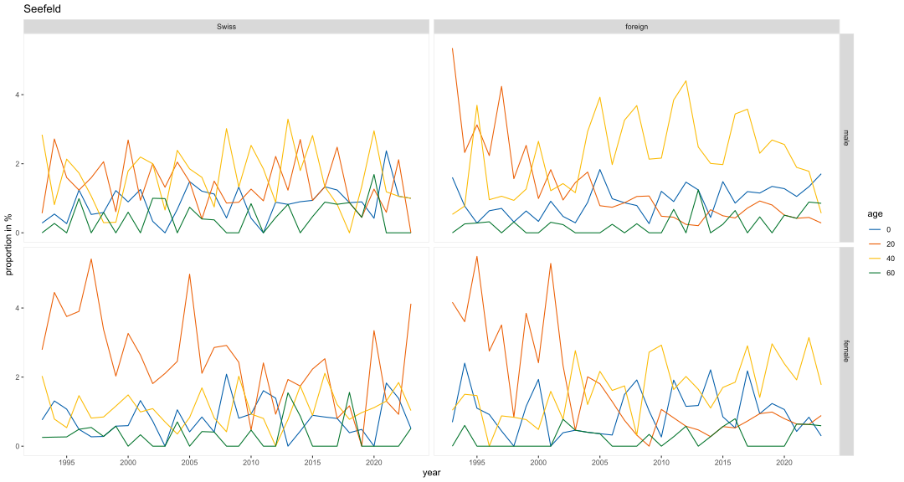
Figure 3.57: immigration* age proportion per district, year, sex, origin; focus on years

Figure 3.58: immigration* age proportion per district, year, sex, origin; focus on years

Figure 3.59: immigration* age proportion per district, year, sex, origin; focus on years
Figure 3.60: immigration* age proportion per district, year, sex, origin; focus on years

Figure 3.61: immigration* age proportion per district, year, sex, origin; focus on years
Figure 3.62: immigration* age proportion per district, year, sex, origin; focus on years
Figure 3.63: immigration* age proportion per district, year, sex, origin; focus on years
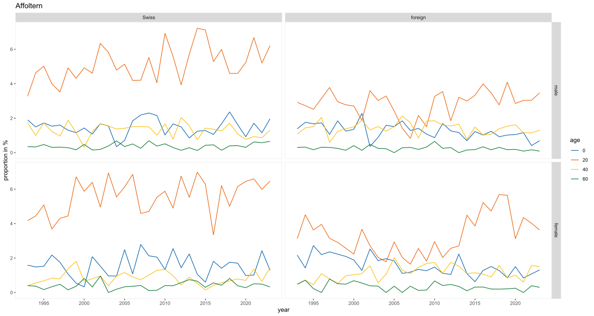
Figure 3.64: immigration* age proportion per district, year, sex, origin; focus on years
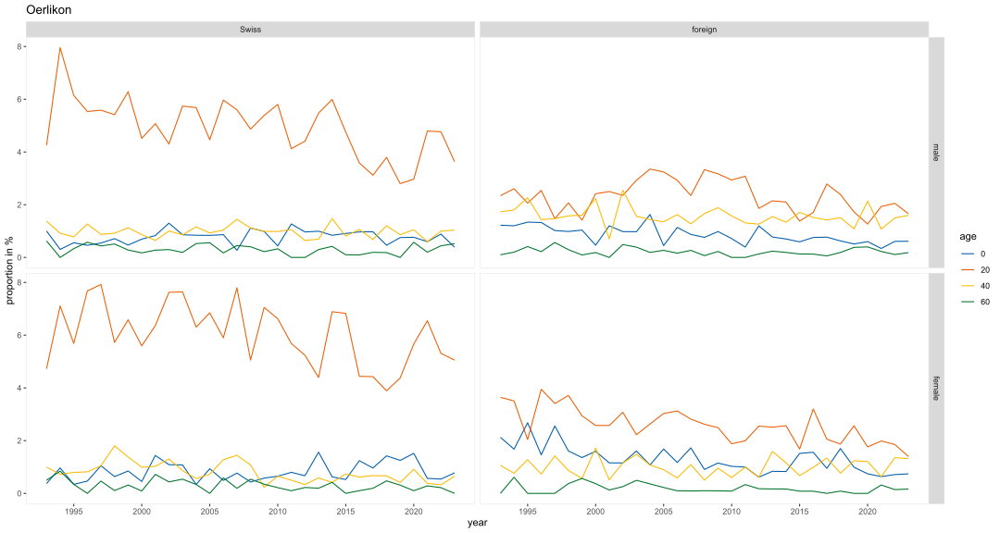
Figure 3.65: immigration* age proportion per district, year, sex, origin; focus on years
Figure 3.66: immigration* age proportion per district, year, sex, origin; focus on years

Figure 3.67: immigration* age proportion per district, year, sex, origin; focus on years

Figure 3.68: immigration* age proportion per district, year, sex, origin; focus on years

Figure 3.69: immigration* age proportion per district, year, sex, origin; focus on years
smoothing immigration* with LOESS over years (by district, age, sex)
focus age

Figure 3.70: immigration* smoothed over year; focus on age
Figure 3.71: immigration* smoothed over year; focus on age
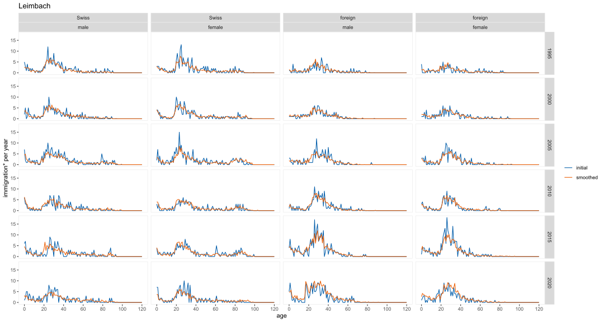
Figure 3.72: immigration* smoothed over year; focus on age
Figure 3.73: immigration* smoothed over year; focus on age
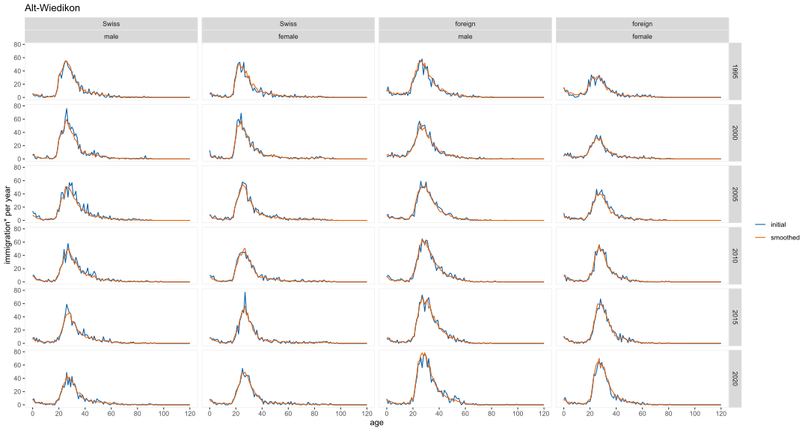
Figure 3.74: immigration* smoothed over year; focus on age
Figure 3.75: immigration* smoothed over year; focus on age
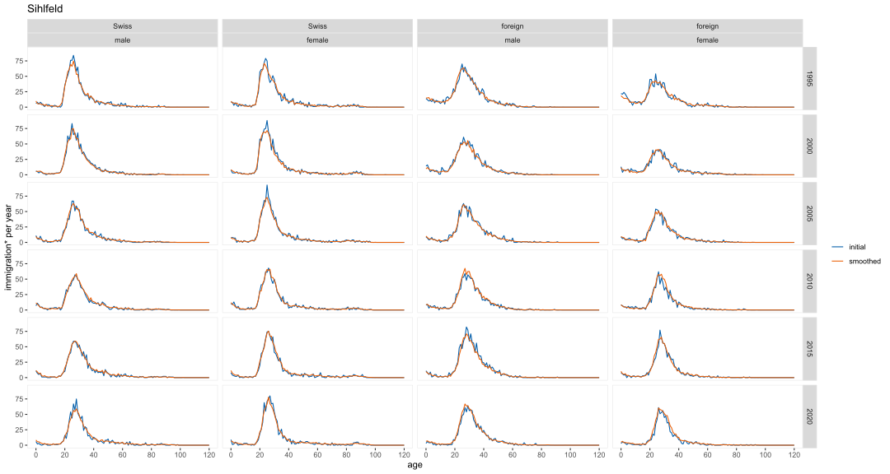
Figure 3.76: immigration* smoothed over year; focus on age

Figure 3.77: immigration* smoothed over year; focus on age
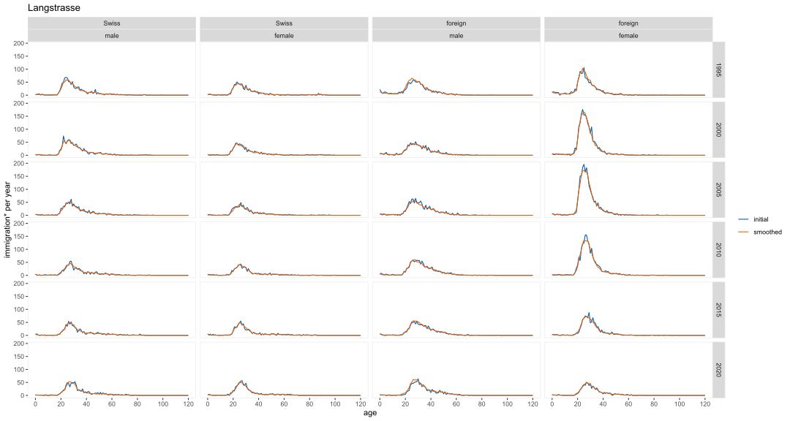
Figure 3.78: immigration* smoothed over year; focus on age
Figure 3.79: immigration* smoothed over year; focus on age
Figure 3.80: immigration* smoothed over year; focus on age

Figure 3.81: immigration* smoothed over year; focus on age
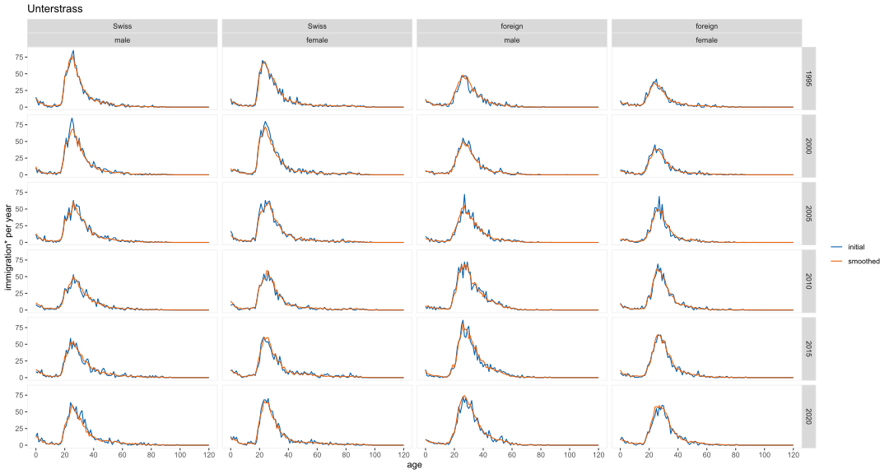
Figure 3.82: immigration* smoothed over year; focus on age
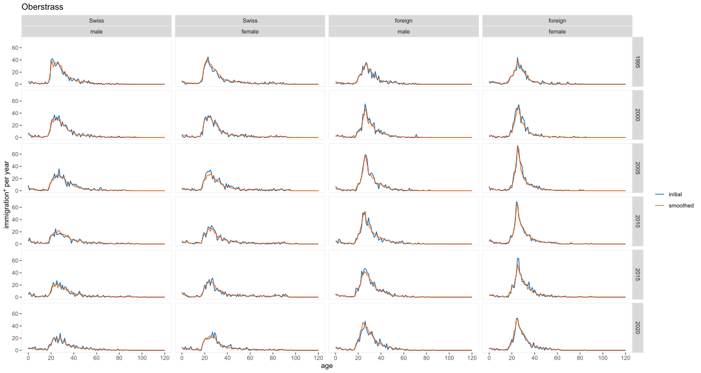
Figure 3.83: immigration* smoothed over year; focus on age

Figure 3.84: immigration* smoothed over year; focus on age

Figure 3.85: immigration* smoothed over year; focus on age

Figure 3.86: immigration* smoothed over year; focus on age
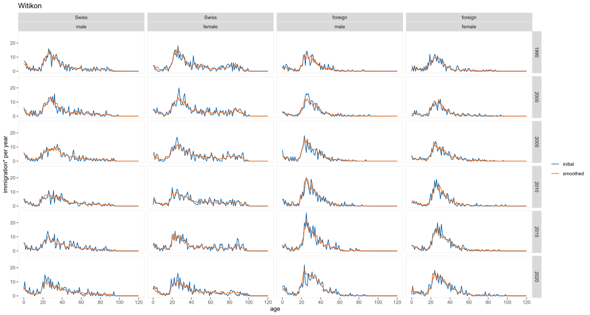
Figure 3.87: immigration* smoothed over year; focus on age
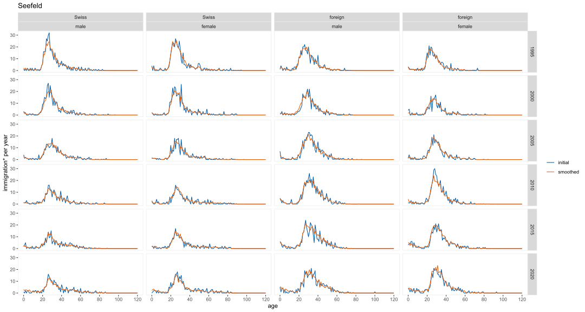
Figure 3.88: immigration* smoothed over year; focus on age
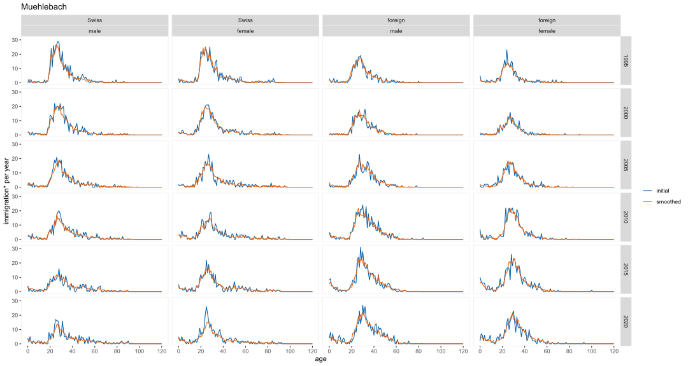
Figure 3.89: immigration* smoothed over year; focus on age

Figure 3.90: immigration* smoothed over year; focus on age

Figure 3.91: immigration* smoothed over year; focus on age
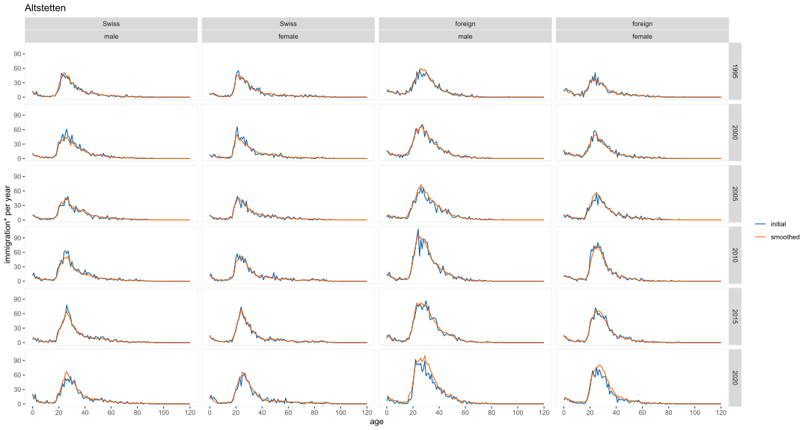
Figure 3.92: immigration* smoothed over year; focus on age
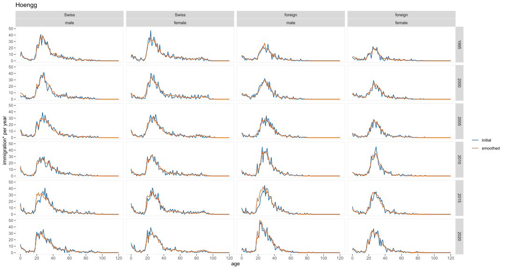
Figure 3.93: immigration* smoothed over year; focus on age

Figure 3.94: immigration* smoothed over year; focus on age
Figure 3.95: immigration* smoothed over year; focus on age
Figure 3.96: immigration* smoothed over year; focus on age
Figure 3.97: immigration* smoothed over year; focus on age
Figure 3.98: immigration* smoothed over year; focus on age
Figure 3.99: immigration* smoothed over year; focus on age
Figure 3.100: immigration* smoothed over year; focus on age
focus years

Figure 3.101: immigration* smoothed over year; focus on years

Figure 3.102: immigration* smoothed over year; focus on years
Figure 3.103: immigration* smoothed over year; focus on years
Figure 3.104: immigration* smoothed over year; focus on years
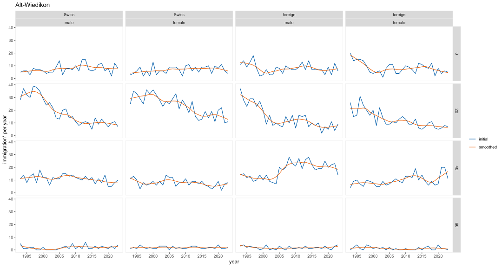
Figure 3.105: immigration* smoothed over year; focus on years

Figure 3.106: immigration* smoothed over year; focus on years

Figure 3.107: immigration* smoothed over year; focus on years
Figure 3.108: immigration* smoothed over year; focus on years
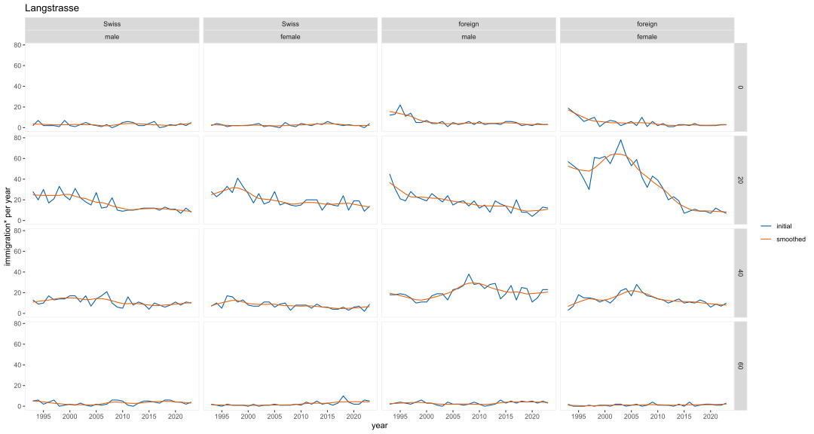
Figure 3.109: immigration* smoothed over year; focus on years

Figure 3.110: immigration* smoothed over year; focus on years
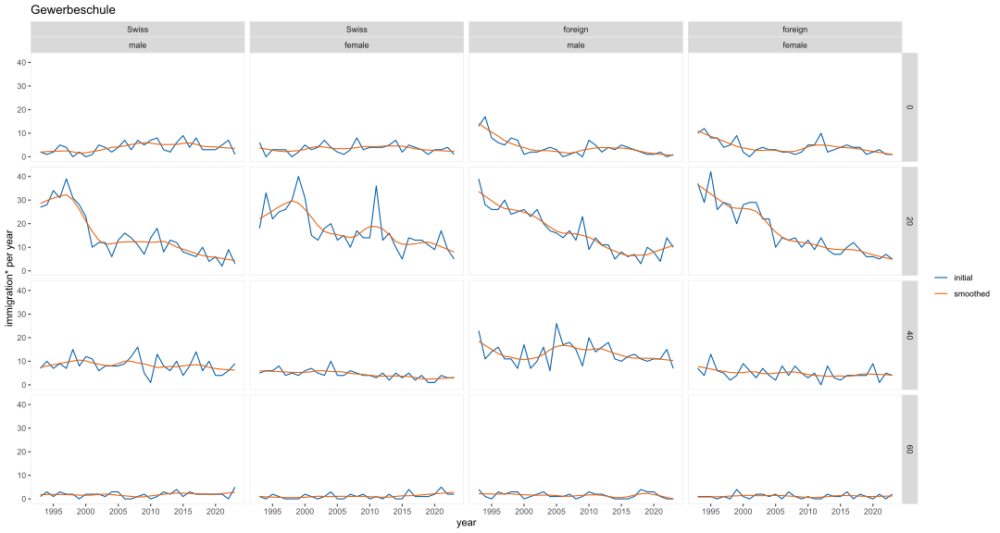
Figure 3.111: immigration* smoothed over year; focus on years
Figure 3.112: immigration* smoothed over year; focus on years

Figure 3.113: immigration* smoothed over year; focus on years

Figure 3.114: immigration* smoothed over year; focus on years
Figure 3.115: immigration* smoothed over year; focus on years
Figure 3.116: immigration* smoothed over year; focus on years

Figure 3.117: immigration* smoothed over year; focus on years
Figure 3.118: immigration* smoothed over year; focus on years

Figure 3.119: immigration* smoothed over year; focus on years

Figure 3.120: immigration* smoothed over year; focus on years

Figure 3.121: immigration* smoothed over year; focus on years

Figure 3.122: immigration* smoothed over year; focus on years
Figure 3.123: immigration* smoothed over year; focus on years

Figure 3.124: immigration* smoothed over year; focus on years

Figure 3.125: immigration* smoothed over year; focus on years

Figure 3.126: immigration* smoothed over year; focus on years
Figure 3.127: immigration* smoothed over year; focus on years
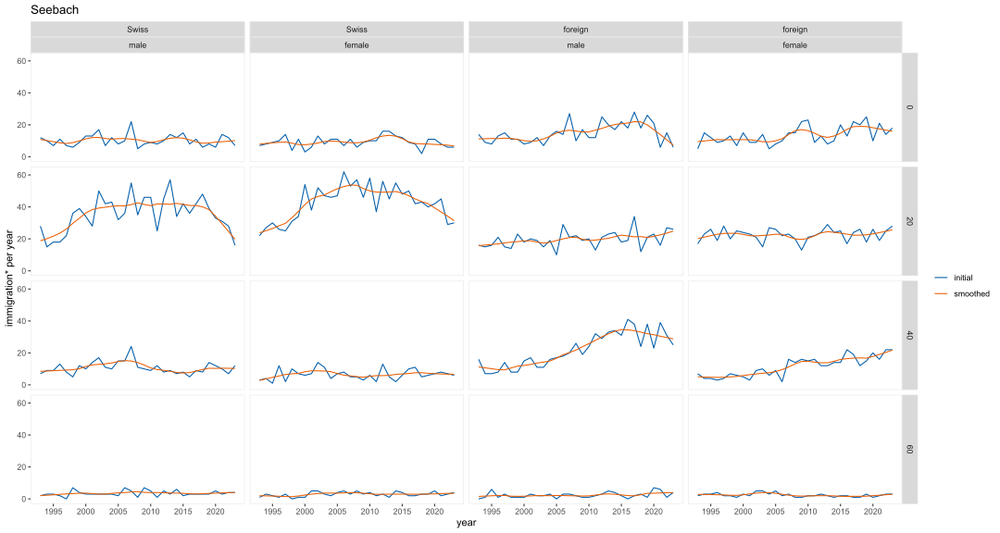
Figure 3.128: immigration* smoothed over year; focus on years

Figure 3.129: immigration* smoothed over year; focus on years

Figure 3.130: immigration* smoothed over year; focus on years

Figure 3.131: immigration* smoothed over year; focus on years
age proportion (after smoothing immigration* over years)
focus age

Figure 3.132: immigration* age proportion after smoothing; focus on age
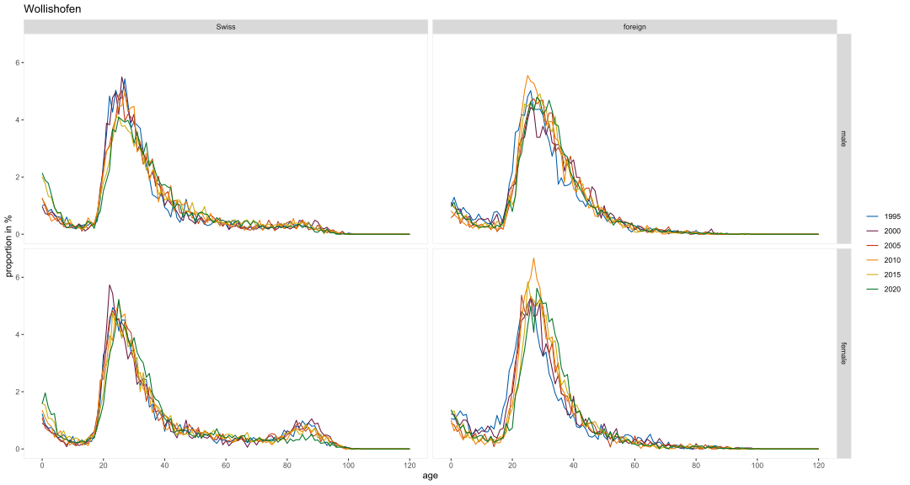
Figure 3.133: immigration* age proportion after smoothing; focus on age

Figure 3.134: immigration* age proportion after smoothing; focus on age
Figure 3.135: immigration* age proportion after smoothing; focus on age
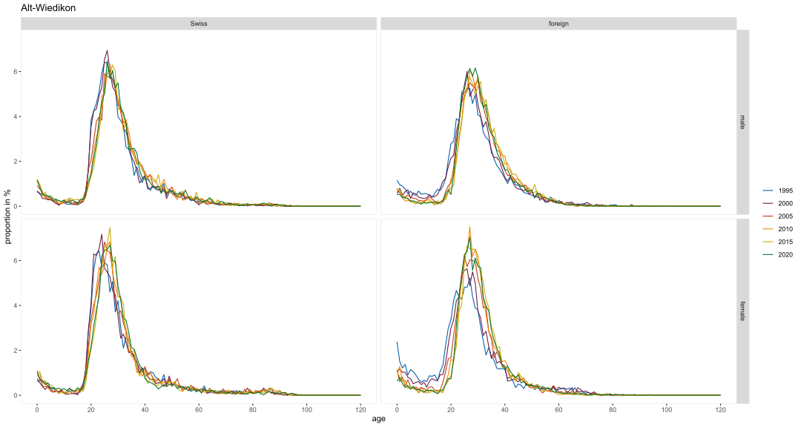
Figure 3.136: immigration* age proportion after smoothing; focus on age

Figure 3.137: immigration* age proportion after smoothing; focus on age

Figure 3.138: immigration* age proportion after smoothing; focus on age
Figure 3.139: immigration* age proportion after smoothing; focus on age

Figure 3.140: immigration* age proportion after smoothing; focus on age

Figure 3.141: immigration* age proportion after smoothing; focus on age
Figure 3.142: immigration* age proportion after smoothing; focus on age
Figure 3.143: immigration* age proportion after smoothing; focus on age

Figure 3.144: immigration* age proportion after smoothing; focus on age

Figure 3.145: immigration* age proportion after smoothing; focus on age
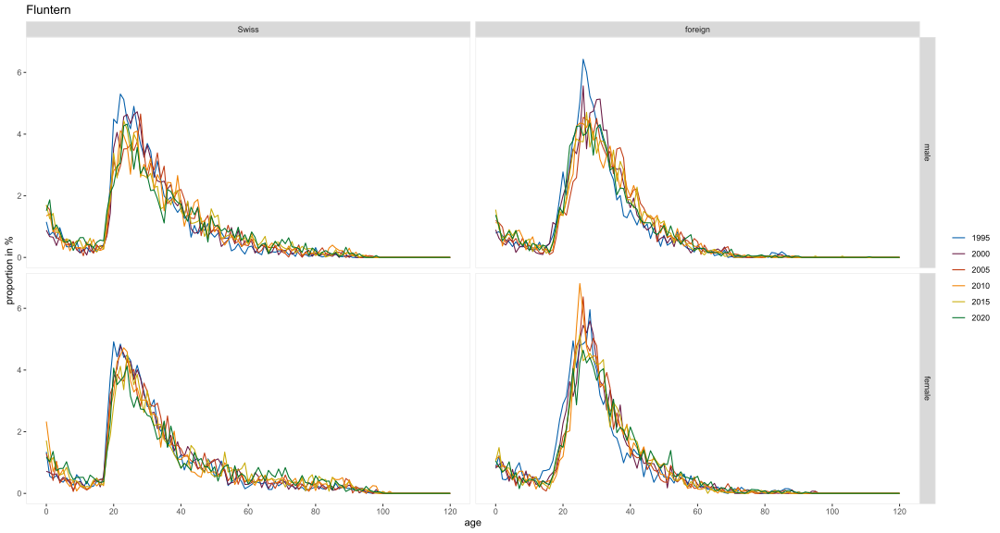
Figure 3.146: immigration* age proportion after smoothing; focus on age
Figure 3.147: immigration* age proportion after smoothing; focus on age
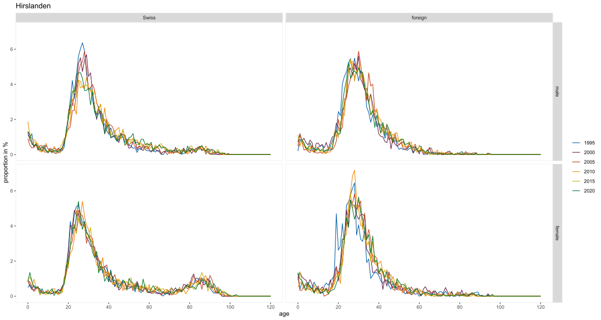
Figure 3.148: immigration* age proportion after smoothing; focus on age
Figure 3.149: immigration* age proportion after smoothing; focus on age
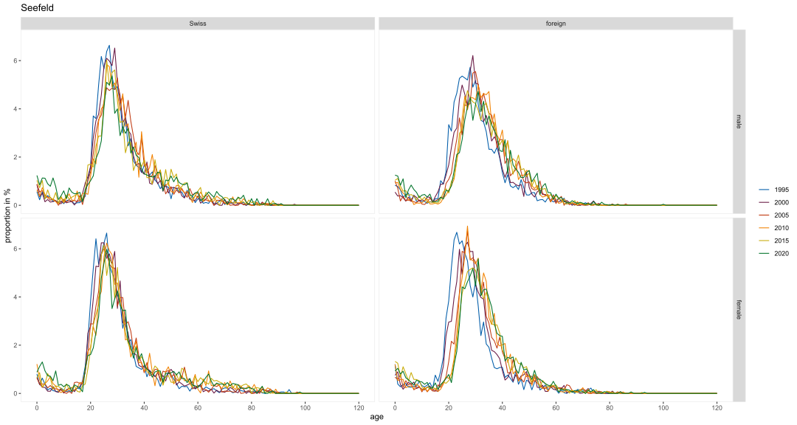
Figure 3.150: immigration* age proportion after smoothing; focus on age

Figure 3.151: immigration* age proportion after smoothing; focus on age

Figure 3.152: immigration* age proportion after smoothing; focus on age
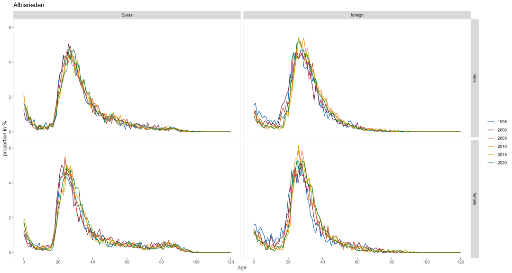
Figure 3.153: immigration* age proportion after smoothing; focus on age

Figure 3.154: immigration* age proportion after smoothing; focus on age

Figure 3.155: immigration* age proportion after smoothing; focus on age
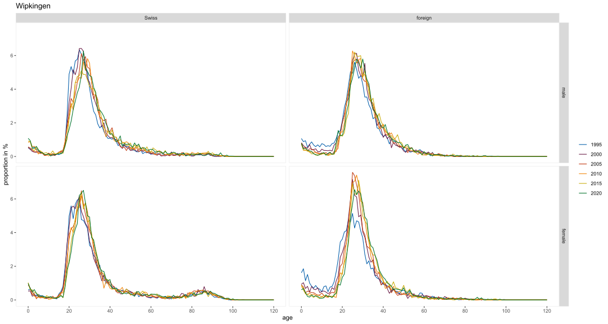
Figure 3.156: immigration* age proportion after smoothing; focus on age

Figure 3.157: immigration* age proportion after smoothing; focus on age

Figure 3.158: immigration* age proportion after smoothing; focus on age

Figure 3.159: immigration* age proportion after smoothing; focus on age
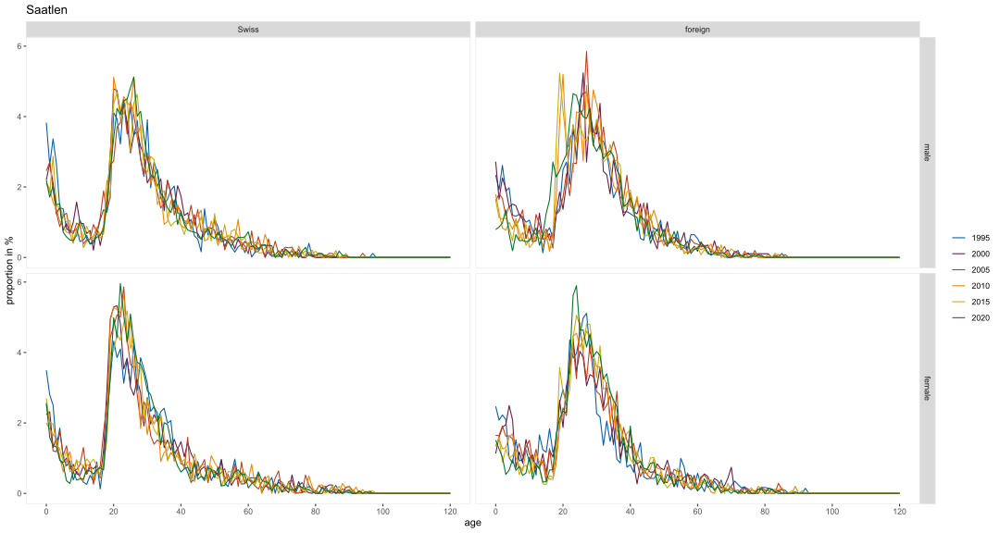
Figure 3.160: immigration* age proportion after smoothing; focus on age

Figure 3.161: immigration* age proportion after smoothing; focus on age
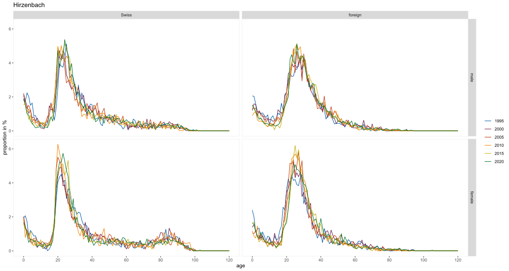
Figure 3.162: immigration* age proportion after smoothing; focus on age
focus years
Figure 3.163: immigration* age proportion after smoothing; focus on years
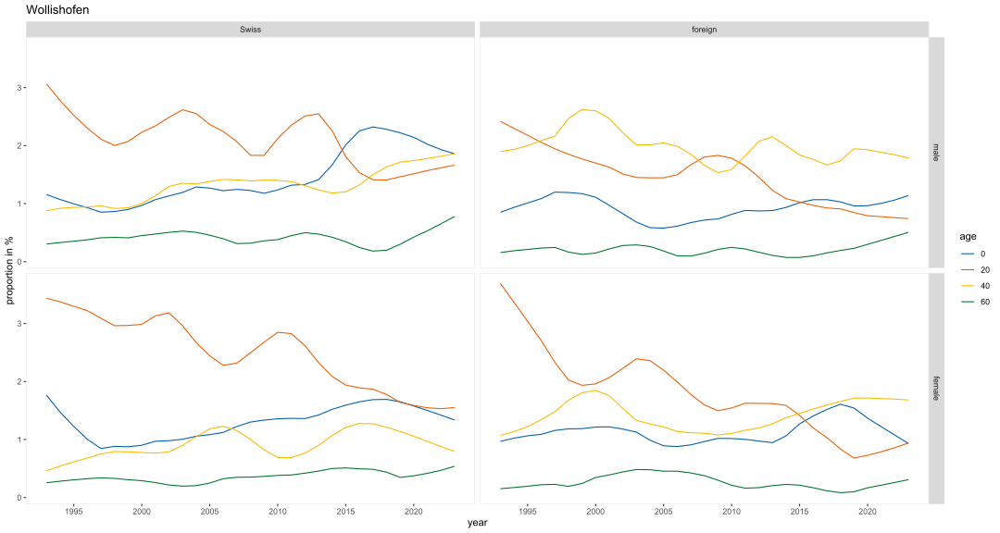
Figure 3.164: immigration* age proportion after smoothing; focus on years
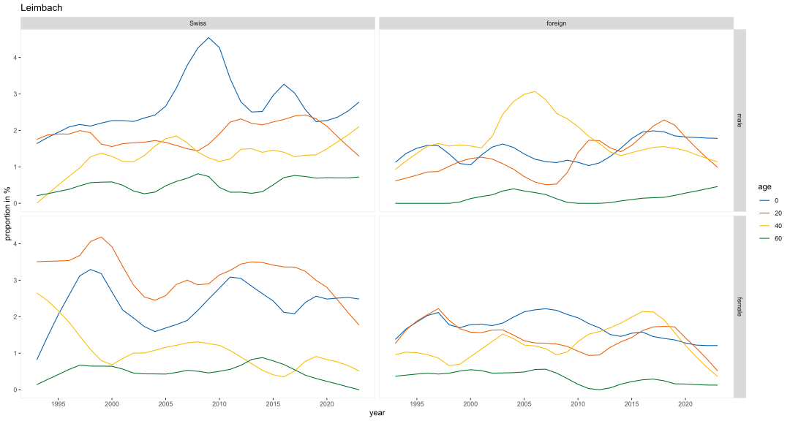
Figure 3.165: immigration* age proportion after smoothing; focus on years
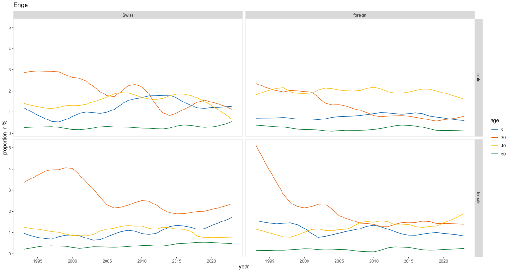
Figure 3.166: immigration* age proportion after smoothing; focus on years
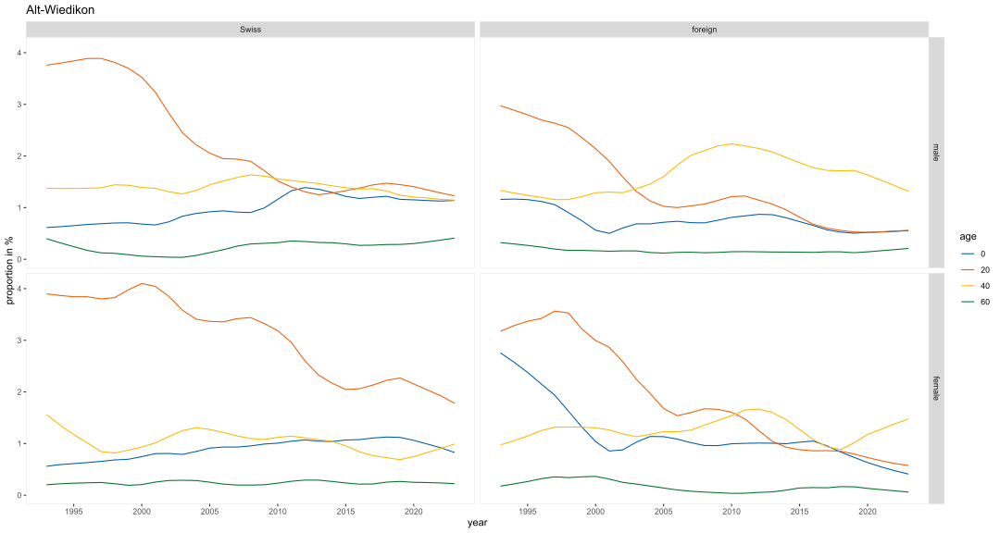
Figure 3.167: immigration* age proportion after smoothing; focus on years
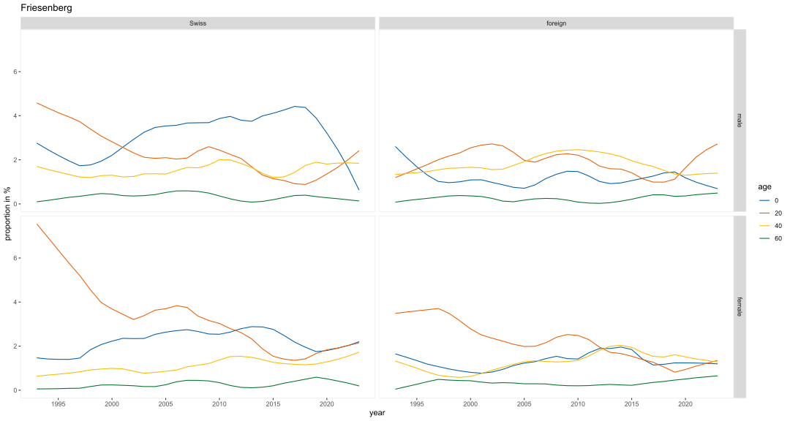
Figure 3.168: immigration* age proportion after smoothing; focus on years

Figure 3.169: immigration* age proportion after smoothing; focus on years
Figure 3.170: immigration* age proportion after smoothing; focus on years
Figure 3.171: immigration* age proportion after smoothing; focus on years
Figure 3.172: immigration* age proportion after smoothing; focus on years

Figure 3.173: immigration* age proportion after smoothing; focus on years

Figure 3.174: immigration* age proportion after smoothing; focus on years

Figure 3.175: immigration* age proportion after smoothing; focus on years

Figure 3.176: immigration* age proportion after smoothing; focus on years

Figure 3.177: immigration* age proportion after smoothing; focus on years
Figure 3.178: immigration* age proportion after smoothing; focus on years
Figure 3.179: immigration* age proportion after smoothing; focus on years

Figure 3.180: immigration* age proportion after smoothing; focus on years

Figure 3.181: immigration* age proportion after smoothing; focus on years

Figure 3.182: immigration* age proportion after smoothing; focus on years

Figure 3.183: immigration* age proportion after smoothing; focus on years
Figure 3.184: immigration* age proportion after smoothing; focus on years
Figure 3.185: immigration* age proportion after smoothing; focus on years
Figure 3.186: immigration* age proportion after smoothing; focus on years

Figure 3.187: immigration* age proportion after smoothing; focus on years

Figure 3.188: immigration* age proportion after smoothing; focus on years

Figure 3.189: immigration* age proportion after smoothing; focus on years

Figure 3.190: immigration* age proportion after smoothing; focus on years
Figure 3.191: immigration* age proportion after smoothing; focus on years

Figure 3.192: immigration* age proportion after smoothing; focus on years
Figure 3.193: immigration* age proportion after smoothing; focus on years
smoothing proportion by age with LOESS
focus age
Figure 3.194: immigration* proportion smoothed; focus on age
Figure 3.195: immigration* proportion smoothed; focus on age

Figure 3.196: immigration* proportion smoothed; focus on age

Figure 3.197: immigration* proportion smoothed; focus on age
Figure 3.198: immigration* proportion smoothed; focus on age
Figure 3.199: immigration* proportion smoothed; focus on age

Figure 3.200: immigration* proportion smoothed; focus on age
Figure 3.201: immigration* proportion smoothed; focus on age

Figure 3.202: immigration* proportion smoothed; focus on age

Figure 3.203: immigration* proportion smoothed; focus on age

Figure 3.204: immigration* proportion smoothed; focus on age

Figure 3.205: immigration* proportion smoothed; focus on age

Figure 3.206: immigration* proportion smoothed; focus on age

Figure 3.207: immigration* proportion smoothed; focus on age
Figure 3.208: immigration* proportion smoothed; focus on age
Figure 3.209: immigration* proportion smoothed; focus on age
Figure 3.210: immigration* proportion smoothed; focus on age

Figure 3.211: immigration* proportion smoothed; focus on age

Figure 3.212: immigration* proportion smoothed; focus on age

Figure 3.213: immigration* proportion smoothed; focus on age
Figure 3.214: immigration* proportion smoothed; focus on age
Figure 3.215: immigration* proportion smoothed; focus on age

Figure 3.216: immigration* proportion smoothed; focus on age

Figure 3.217: immigration* proportion smoothed; focus on age

Figure 3.218: immigration* proportion smoothed; focus on age
Figure 3.219: immigration* proportion smoothed; focus on age

Figure 3.220: immigration* proportion smoothed; focus on age

Figure 3.221: immigration* proportion smoothed; focus on age
Figure 3.222: immigration* proportion smoothed; focus on age

Figure 3.223: immigration* proportion smoothed; focus on age

Figure 3.224: immigration* proportion smoothed; focus on age
regression
Figure 3.225: immigration* age proportion by district, year, sex, origin; past and future
Figure 3.226: immigration* age proportion by district, year, sex, origin; past and future
Figure 3.227: immigration* age proportion by district, year, sex, origin; past and future

Figure 3.228: immigration* age proportion by district, year, sex, origin; past and future

Figure 3.229: immigration* age proportion by district, year, sex, origin; past and future
Figure 3.230: immigration* age proportion by district, year, sex, origin; past and future

Figure 3.231: immigration* age proportion by district, year, sex, origin; past and future
Figure 3.232: immigration* age proportion by district, year, sex, origin; past and future
Figure 3.233: immigration* age proportion by district, year, sex, origin; past and future
Figure 3.234: immigration* age proportion by district, year, sex, origin; past and future
Figure 3.235: immigration* age proportion by district, year, sex, origin; past and future

Figure 3.236: immigration* age proportion by district, year, sex, origin; past and future

Figure 3.237: immigration* age proportion by district, year, sex, origin; past and future
Figure 3.238: immigration* age proportion by district, year, sex, origin; past and future

Figure 3.239: immigration* age proportion by district, year, sex, origin; past and future
Figure 3.240: immigration* age proportion by district, year, sex, origin; past and future
Figure 3.241: immigration* age proportion by district, year, sex, origin; past and future
Figure 3.242: immigration* age proportion by district, year, sex, origin; past and future
Figure 3.243: immigration* age proportion by district, year, sex, origin; past and future

Figure 3.244: immigration* age proportion by district, year, sex, origin; past and future

Figure 3.245: immigration* age proportion by district, year, sex, origin; past and future
Figure 3.246: immigration* age proportion by district, year, sex, origin; past and future

Figure 3.247: immigration* age proportion by district, year, sex, origin; past and future
Figure 3.248: immigration* age proportion by district, year, sex, origin; past and future
Figure 3.249: immigration* age proportion by district, year, sex, origin; past and future

Figure 3.250: immigration* age proportion by district, year, sex, origin; past and future

Figure 3.251: immigration* age proportion by district, year, sex, origin; past and future
Figure 3.252: immigration* age proportion by district, year, sex, origin; past and future

Figure 3.253: immigration* age proportion by district, year, sex, origin; past and future
Figure 3.254: immigration* age proportion by district, year, sex, origin; past and future

Figure 3.255: immigration* age proportion by district, year, sex, origin; past and future
look precisely at the age plots over years
focus age
Figure 3.256: immigration* age proportion by district, year, sex, origin; past and future, focus on age

Figure 3.257: immigration* age proportion by district, year, sex, origin; past and future, focus on age

Figure 3.258: immigration* age proportion by district, year, sex, origin; past and future, focus on age

Figure 3.259: immigration* age proportion by district, year, sex, origin; past and future, focus on age
Figure 3.260: immigration* age proportion by district, year, sex, origin; past and future, focus on age
Figure 3.261: immigration* age proportion by district, year, sex, origin; past and future, focus on age

Figure 3.262: immigration* age proportion by district, year, sex, origin; past and future, focus on age
Figure 3.263: immigration* age proportion by district, year, sex, origin; past and future, focus on age
Figure 3.264: immigration* age proportion by district, year, sex, origin; past and future, focus on age
Figure 3.265: immigration* age proportion by district, year, sex, origin; past and future, focus on age
Figure 3.266: immigration* age proportion by district, year, sex, origin; past and future, focus on age
Figure 3.267: immigration* age proportion by district, year, sex, origin; past and future, focus on age
Figure 3.268: immigration* age proportion by district, year, sex, origin; past and future, focus on age

Figure 3.269: immigration* age proportion by district, year, sex, origin; past and future, focus on age
Figure 3.270: immigration* age proportion by district, year, sex, origin; past and future, focus on age
Figure 3.271: immigration* age proportion by district, year, sex, origin; past and future, focus on age
Figure 3.272: immigration* age proportion by district, year, sex, origin; past and future, focus on age
Figure 3.273: immigration* age proportion by district, year, sex, origin; past and future, focus on age

Figure 3.274: immigration* age proportion by district, year, sex, origin; past and future, focus on age

Figure 3.275: immigration* age proportion by district, year, sex, origin; past and future, focus on age

Figure 3.276: immigration* age proportion by district, year, sex, origin; past and future, focus on age

Figure 3.277: immigration* age proportion by district, year, sex, origin; past and future, focus on age

Figure 3.278: immigration* age proportion by district, year, sex, origin; past and future, focus on age

Figure 3.279: immigration* age proportion by district, year, sex, origin; past and future, focus on age

Figure 3.280: immigration* age proportion by district, year, sex, origin; past and future, focus on age
Figure 3.281: immigration* age proportion by district, year, sex, origin; past and future, focus on age
Figure 3.282: immigration* age proportion by district, year, sex, origin; past and future, focus on age
Figure 3.283: immigration* age proportion by district, year, sex, origin; past and future, focus on age

Figure 3.284: immigration* age proportion by district, year, sex, origin; past and future, focus on age

Figure 3.285: immigration* age proportion by district, year, sex, origin; past and future, focus on age
Figure 3.286: immigration* age proportion by district, year, sex, origin; past and future, focus on age
focus years

Figure 3.287: immigration* age proportion by district, year, sex, origin; past and future, focus on years

Figure 3.288: immigration* age proportion by district, year, sex, origin; past and future, focus on years
Figure 3.289: immigration* age proportion by district, year, sex, origin; past and future, focus on years

Figure 3.290: immigration* age proportion by district, year, sex, origin; past and future, focus on years
Figure 3.291: immigration* age proportion by district, year, sex, origin; past and future, focus on years

Figure 3.292: immigration* age proportion by district, year, sex, origin; past and future, focus on years
Figure 3.293: immigration* age proportion by district, year, sex, origin; past and future, focus on years
Figure 3.294: immigration* age proportion by district, year, sex, origin; past and future, focus on years
Figure 3.295: immigration* age proportion by district, year, sex, origin; past and future, focus on years

Figure 3.296: immigration* age proportion by district, year, sex, origin; past and future, focus on years
Figure 3.297: immigration* age proportion by district, year, sex, origin; past and future, focus on years

Figure 3.298: immigration* age proportion by district, year, sex, origin; past and future, focus on years

Figure 3.299: immigration* age proportion by district, year, sex, origin; past and future, focus on years
Figure 3.300: immigration* age proportion by district, year, sex, origin; past and future, focus on years

Figure 3.301: immigration* age proportion by district, year, sex, origin; past and future, focus on years
Figure 3.302: immigration* age proportion by district, year, sex, origin; past and future, focus on years
Figure 3.303: immigration* age proportion by district, year, sex, origin; past and future, focus on years
Figure 3.304: immigration* age proportion by district, year, sex, origin; past and future, focus on years
Figure 3.305: immigration* age proportion by district, year, sex, origin; past and future, focus on years
Figure 3.306: immigration* age proportion by district, year, sex, origin; past and future, focus on years
Figure 3.307: immigration* age proportion by district, year, sex, origin; past and future, focus on years
Figure 3.308: immigration* age proportion by district, year, sex, origin; past and future, focus on years
Figure 3.309: immigration* age proportion by district, year, sex, origin; past and future, focus on years
Figure 3.310: immigration* age proportion by district, year, sex, origin; past and future, focus on years
Figure 3.311: immigration* age proportion by district, year, sex, origin; past and future, focus on years

Figure 3.312: immigration* age proportion by district, year, sex, origin; past and future, focus on years
Figure 3.313: immigration* age proportion by district, year, sex, origin; past and future, focus on years

Figure 3.314: immigration* age proportion by district, year, sex, origin; past and future, focus on years

Figure 3.315: immigration* age proportion by district, year, sex, origin; past and future, focus on years
Figure 3.316: immigration* age proportion by district, year, sex, origin; past and future, focus on years
Figure 3.317: immigration* age proportion by district, year, sex, origin; past and future, focus on years